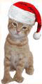

August 17, 2003
一个讲道理的故事
 一开QQ，就弹出一个朋友转来的URL，链接到一个页面，借着一个故事讲述一个道理：“世间最珍贵的不是‘得不到’和‘已失去’，而是现在能把握的幸福。”，并预言将这个故事（或URL）转发给自己的朋友，心想能事成。有兴趣的朋友可以到http://www.gzgy.cn.gs/yggs/看到原文。
一开QQ，就弹出一个朋友转来的URL，链接到一个页面，借着一个故事讲述一个道理：“世间最珍贵的不是‘得不到’和‘已失去’，而是现在能把握的幸福。”，并预言将这个故事（或URL）转发给自己的朋友，心想能事成。有兴趣的朋友可以到http://www.gzgy.cn.gs/yggs/看到原文。
我没有将这个故事通过e-mail发给朋友们，只是在QQ上将其转发给一些常联系的朋友。我不敢奢望自己在愿望会实现，只是非常感谢远方朋友的关怀。如果这封信真有神奇的力量，我倒真心希望我的朋友们都能心想事成，过得快乐平安！
说实话，转不转这个链接，我是很犹豫的，当看到文后所列的转发所带来的可能收益时，更增加了我的犹豫而不是决定的信心。关心一个人，关心一个朋友，非要以给自己带来一定的收益为前提吗？据说，阎罗殿大门有一副对联，“有心为善，虽善不赏。无心为恶，虽恶不罚。”，大概也是提醒人们，做善事就真心地做好了，不要期望有什么回报。窃以为然。
当我读这个故事的时候，忽然想起了安徒生笔下的美人鱼的故事，只是这个故事以大团圆结尾，而美人鱼却化成了一座守望的雕像。那美丽善良而神伤的美人鱼！
这不是一个神话故事，而是为了使你领悟一个道理
从前，有一座圆音寺，每天都有许多人上香拜佛，香火很旺。在圆音寺庙前的横梁上有个蜘蛛结了张网，由于每天都受到香火和虔诚的祭拜的熏托，蛛蛛便有了佛性。经过了一千多年的修炼，蛛蛛佛性增加了不少。
忽然有一天，佛主光临了圆音寺，看见这里香火甚旺，十分高兴。离开寺庙的时候，不轻易间地抬头，看见了横梁上的蛛蛛。佛主停下来，问这只蜘蛛：“你我相见总算是有缘，我来问你个问题，看你修炼了这一千多年来，有什么真知拙见。怎么样？”蜘蛛遇见佛主很是高兴，连忙答应了。佛主问到：“世间什么才是最珍贵的？”蜘蛛想了想，回答到：“世间最珍贵的是‘得不到’和‘已失去’。”佛主点了点头，离开了。
就这样又过了一千年的光景，蜘蛛依旧在圆音寺的横梁上修炼，它的佛性大增。一日，佛主又来到寺前，对蜘蛛说道：“你可还好，一千年前的那个问题，你可有什么更深的认识吗？”蜘蛛说：“我觉得世间最珍贵的是‘得不到’和‘已失去’。”佛主说：“你再好好想想，我会再来找你的。”
又过了一千年，有一天，刮起了大风，风将一滴甘露吹到了蜘蛛网上。蜘蛛望着甘露，见它晶莹透亮，很漂亮，顿生喜爱之意。蜘蛛每天看着甘露很开心，它觉得这是三千年来最开心的几天。突然， 又刮起了一阵大风，将甘露吹走了。蜘蛛一下子觉得失去了什么，感到很寂寞和难过。这时佛主又来了，问蜘蛛：“蜘蛛这一千年，你可好好想过这个问题：世间什么才是最珍贵的？”蜘蛛想到了甘露，对佛主说：“世间最珍贵的是‘得不到’和‘已失去’。”佛主说：“好，既然你有这样的认识，我让你到人间走一朝吧。”
就这样，蜘蛛投胎到了一个官宦家庭，成了一个富家小姐，父母为她取了个名字叫蛛儿。一晃，蛛儿到了十六岁了，已经成了个婀娜多姿的少女，长的十分漂亮，楚楚动人。
这一日，新科状元郎甘鹿中士，皇帝决定在后花园为他举行庆功宴席。来了许多妙龄少女，包括蛛儿，还有皇帝的小公主长风公主。状元郎在席间表演诗词歌赋，大献才艺，在场的少女无一不被他折倒。但蛛儿一点也不紧张和吃醋，因为她知道，这是佛主赐予她的姻缘。
过了些日子，说来很巧，蛛儿陪同母亲上香拜佛的时候，正好甘鹿也陪同母亲而来。上完香拜过佛，二位长者在一边说上了话。蛛儿和甘鹿便来到走廊上聊天，蛛儿很开心，终于可以和喜欢的人在一起了，但是甘鹿并没有表现出对她的喜爱。蛛儿对甘鹿说：“你难道不曾记得十六年前，圆音寺的蜘蛛网上的事情了吗？”甘鹿很诧异，说：“蛛儿姑娘，你漂亮，也很讨人喜欢，但你想象力未免丰富了一点吧。”说罢，和母亲离开了。
蛛儿回到家，心想，佛主既然安排了这场姻缘，为何不让他记得那件事，甘鹿为何对我没有一点的感觉？
几天后，皇帝下召，命新科状元甘鹿和长风公主完婚；蛛儿和太子芝草完婚。这一消息对蛛儿如同晴空霹雳，她怎么也想不同，佛主竟然这样对她。几日来，她不吃不喝，穷究急思，灵魂就将出壳，生命危在旦夕。太子芝草知道了，急忙赶来，扑倒在床边，对奄奄一息的蛛儿说道：“那日，在后花园众姑娘中，我对你一见钟情，我苦求父皇，他才答应。如果你死了，那么我也就不活了。”说着就拿起了宝剑准备自刎。
就在这时，佛主来了，他对快要出壳的蛛儿灵魂说：“蜘蛛，你可曾想过，甘露（甘鹿）是由谁带到你这里来的呢？是风（长风公主）带来的，最后也是风将它带走的。甘鹿是属于长风公主的，他对你不过是生命中的一段插曲。而太子芝草是当年圆音寺门前的一棵小草，他看了你三千年，爱慕了你三千年，但你却从没有低下头看过它。蜘蛛，我再来问你，世间什么才是最珍贵的？”蜘蛛听了这些真相之后，好象一下子大彻大悟了，她对佛主说：“世间最珍贵的不是‘得不到’和‘已失去’，而是现在能把握的幸福。”刚说完，佛主就离开了，蛛儿的灵魂也回位了，睁开眼睛，看到正要自刎的太子芝草，她马上打落宝剑，和太子深深的抱着…… 
故事结束了，你能领会蛛儿最后一刻的所说的话吗？“世间最珍贵的不是‘得不到’和‘已失去’，而是现在能把握的幸福。”
http://www.gzgy.cn.gs/yggs/
是啊 写得太好了
Posted by: bamboo handles handbag handles wooden handles at January 15, 2004 04:02 PM